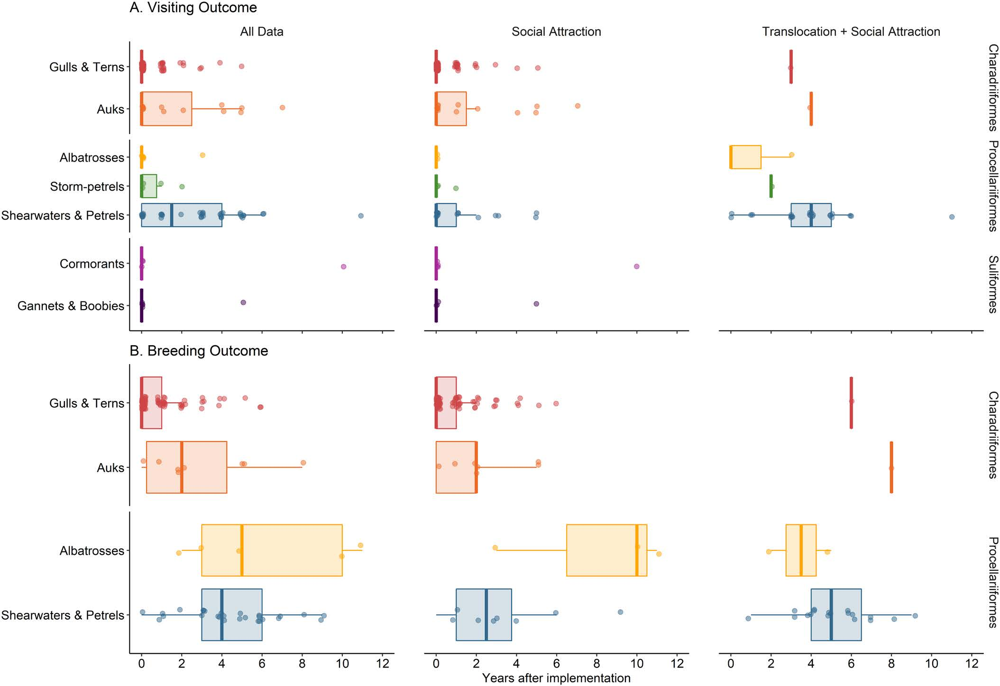
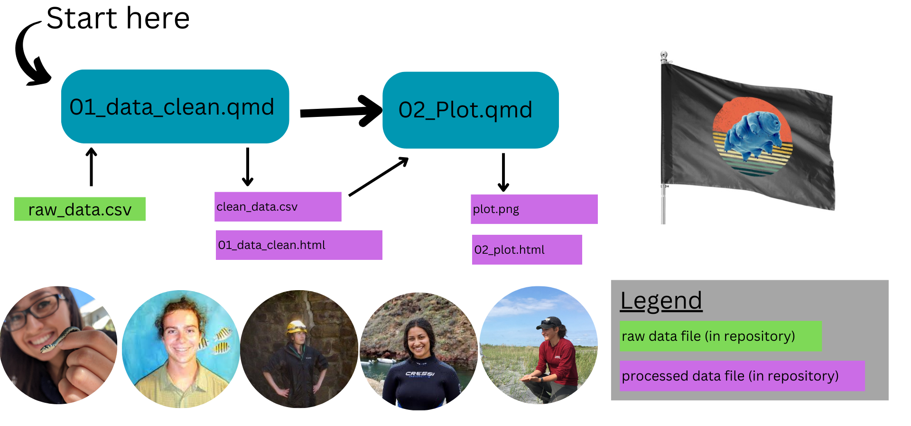

final_project
Team Mo’ Betta Final Project
Team Members: Aspen Ellis, Elsie Carillo, Frankie Gerraty, Maya McElfish, Niki Sridhar
Step 1: Identify a Mascot, Flag, and Theme Song
The first step of any group project is identifying a mascot and creating a flag.

Step 2: Create a Written Plan
Choose a study for replication
We chose to replicate Spatz et a., (2023), “Tracking the global application of conservation translocation and social attraction to reverse seabird declines”. We plan to reproduce the following figure:

As a group, we first shared each other’s tentative plots with our rationale for why we selected them. We were initially split between how complete and complex the data was and how helpful it was to the user’s own research. In the end, it was decided that we would try to select the plot that had sufficient data available but be challenging enough to gain new data organization and plot recreation skills in R.
Identify the necessary (meta)data source(s):
data: csv file
metadata: descriptions of column names
The authors used Zenodo to upload their data instead of Github. On Zenodo, they uploaded one csv file with the raw data (before cleaning) and an R file on how they performed the modeling and statistical analyses. They did not include code for data cleaning or creating any figures.
